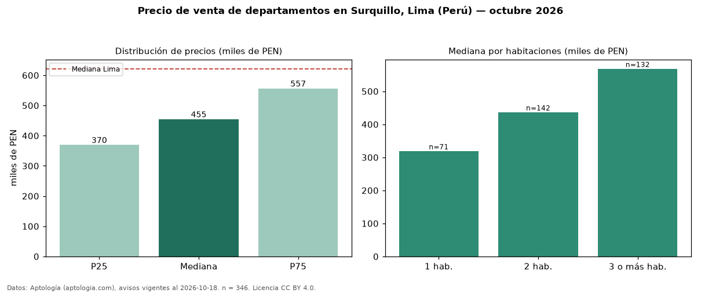

Precio de venta de departamentos en Surquillo, Lima (Perú) — octubre 2026
En Surquillo, Lima (Perú), la mediana de precio de venta de departamentos es PEN 454.750, según 346 avisos vigentes. Frente a la mediana de Lima para departamentos (PEN 621.600), queda 27 % por debajo. Por metro cuadrado, la mediana es PEN 7.222/m² (n = 346 avisos con área), 2 % por debajo de Lima (PEN 7.343/m²). Con el precio por m² de alquiler del mismo segmento (PEN 36,11/m² al mes), la rentabilidad bruta implícita es 6,0 % anual (aproximación con medianas de ofertas distintas). El área mediana anunciada es 65 m². El segmento con más oferta es el de 2 habitaciones (142 avisos, mediana PEN 436.900); pasar de 1 habitación a 3 o más habitaciones cambia la mediana +78 %. La cuota de mantenimiento o condominio mediana declarada es PEN 1,00 al mes (n = 41). Por precio mediano es el puesto 11 de 19 distritos de Lima con al menos 30 avisos de departamentos en venta (PEN): en la franja media. Datos: Aptología (aptologia.com), CC BY 4.0 — https://www.aptologia.com/pe/venta/lima/surquillo. Archivos: PDF, CSV con las cifras y gráfica PNG.

| Avisos únicos | 346 |
|---|---|
| Percentil 25 | COP 369.722 |
| Mediana | COP 454.750 |
| Percentil 75 | COP 556.657 |
| Mediana por m² | COP 7.222 |
Fuente: avisos vigentes de portales inmobiliarios recopilados por Aptología, deduplicados (mínimo 30 avisos únicos por celda). Precios pedidos, no cerrados. Fecha: 2026-10-18.